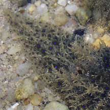
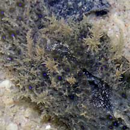
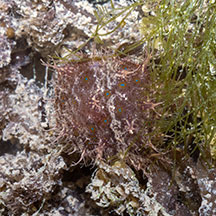
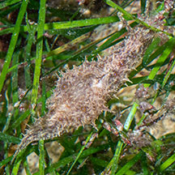
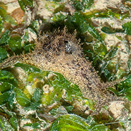
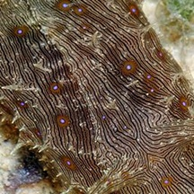

|
|
| sea hares text index | photo index |
| Phylum Mollusca > Class Gastropoda > sea slugs > Order Anaspidea |
| Furry
sea hare Stylocheilus sp. Family Aplysiidae updated May 2020 Where seen? This is another 'hairy' sea hare sometimes seen on some Southern shores. Usually large numbers are seen during a visit and then none for a very long time. Features: 5-8cm, sometimes much smaller. Body long with a long 'tail'. It is covered in tiny spiky projections that give it a furry look. The oral tentacles and rhinophores are about the same size. The oral tentacles usually lack large 'hairy' projections and has no flaps. The parapodia appears to be a hole in the centre of the body, rather than 'wings' or flaps as in other large sea hares. It comes in various shades of brow, usually with bright blue or purple spots which are ringed in black or brown. With many fine lines in parallel stripes. Usually well camouflaged and blends in perfectly with among seaweeds and seagrasses. Sometimes mistaken for the Hairy sea hare which have flat thicker 'hair' and lack fine parallel lines. More on how to tell apart hairy slugs and snails. What does it eat? It feeds on cyanobacteria formerly known as the filamentous blue-green algae. These sea hares are preyed upon by the Gymnodoris nudibranch. |
 St John's Island, Mar 05 |
 Long narrow tail with spots. |
 Two pairs of tentacles. |
|
 Spiky projections. |
 Purple or blue spots with fine lines running along the length of the body. |
 Well camouflaged among seaweeds. St John's Island, Nov 15 |
 Tiny one among seagrasses. Changi, Jun 15 |
 Small one among seagrasses. Changi, Apr 09 |
| Furry sea hares on Singapore shores |
On wildsingapore
flickr
|
| Other sightings on Singapore shores |
 |
Links
|